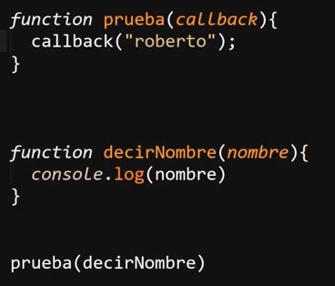
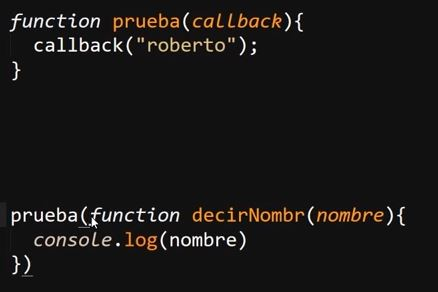
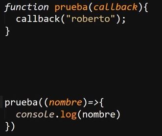

Calbacks
Se tratan de un concepto para estructurar funciones de javaScript, consiste en una funcíon la cual realiza el llamado a otra, es decir es cuando se utiliza una segunda función en la ejecución de la primera.
Existen dos formas de realizar un calback, ya sea realizando un llamado a la función externa como en el siguiete ejemplo:

En este ejemplo se realiza un "calback", ya que a la función "prueba" se le añade como parametro la función "decirNombre", por lo tanto la función "prueba" asigna el valor "roberto" a la función "decirNombre", la cual imprime el valor en pantalla.
El codigo de este ejemplo funciona exactamete igual a un codigo estructurado de la siguite manera:

Tambien se puede realizar los "calback" como funciones flecha:

Defectos
El concepto de "calback", si bien presenta una solución o una alternativa al enfrentar multitud de problematicas al programar, posee la desventaja de que en el caso de que se realisen varios "calback" a la vez es muy prbable quee se produsca codigo spageti.
Es decir los calbacks si bien son muy utiles al programar tambien son muy pocos legibles, por lo que pueden resultar complejos de comprender a la hora de leer el codigo, este tipo de desventaja es mejorada por las promesas.